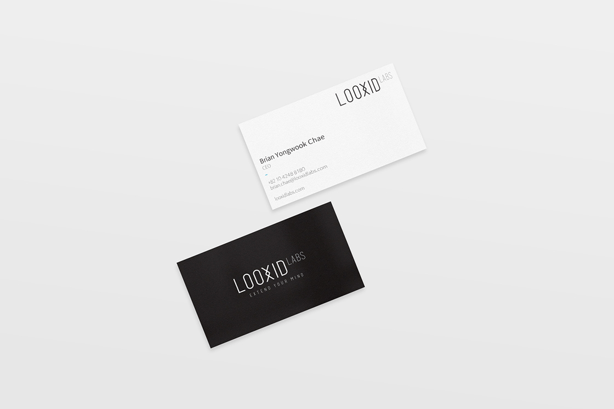
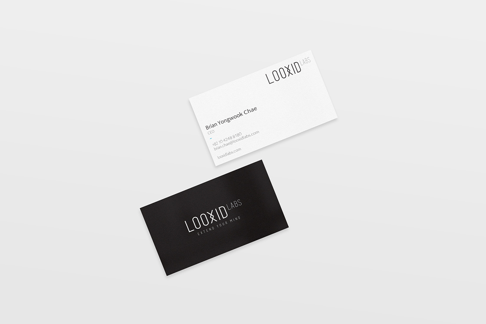
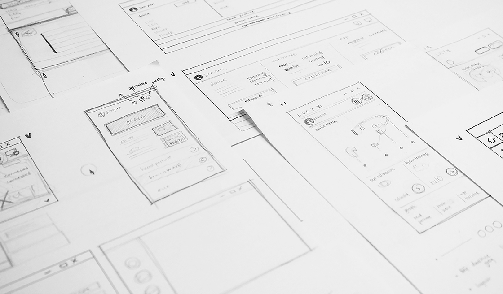
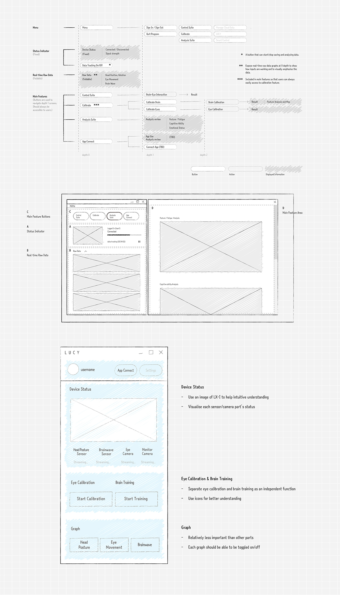

LOOXID Labs는 세계 최초로 사람의 시선 및 뇌의 활동을 정확하게 측정할 수 있는 시선-뇌파 기반 인터페이스(eye-brain interface)용 웨어러블 헤드셋 LX-I을 개발한 뇌인지공학 분야의 스타트업입니다.
본 프로젝트에서는 LOOXID Labs의 CI를 디자인하고, 헤드셋과 사용자의 컴퓨터를 연결하는 PC 어플리케이션 LUCY의 인터페이스를 디자인했습니다.

'융합'의 개념을 상징함과 동시에 최첨단 기술, 에너지 넘치는 LOOXID Labs의 정신을 모두 담아내는 것을 목표로 시각 아이덴티티를 정립했습니다.


 

LUCY는 하드웨어 기기인 LX-I 헤드셋과 사용자를 연결해주는 윈도우용 PC 어플리케이션입니다. 여러 개의 위젯들로 구성되는 형태로 디자인해 사용자이 원하는 그래프만 선택적으로 켜고 끌 수 있도록 만들었습니다. CI와의 일관성을 유지하면서 일반 사용자들에게도 친숙하게 다가가기 위해 밝은 색상과 곡선 위주의 그래픽 요소들을 사용했습니다.
 